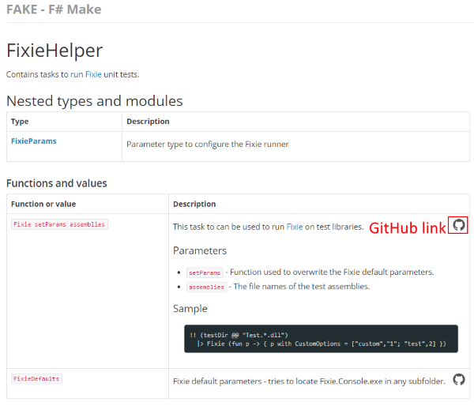

Writing documentation
ProjectScaffold allows to you generate HTML documentation like this page.
Markdown files
In order to edit the docs run:
1:
|
$ build KeepRunning |
This starts the FSharp.Formatting process.

Now open docs/output/index.html and start to edit the files in docs/content. The build script will update the output automatically.
You just have to refresh the browser. Press any key in command line window when you are ready.
API docs
ProjectScaffold generates a build target which automatically generates nice looking API docs for your assemblies.
To configure this process look into docs/tools/generate.fsx and you will find:
1:
|
let referenceBinaries = [ "##ProjectName##.dll" ] |
This will be configured automatically during the init process, but you can add more libraries if you want. In order to start the process run:
1:
|
$ build GenerateReferenceDocs |
The result will be nice looking docs like the following sample:

As you can see it can even create links back to your source code on GitHub.com.
Releasing process
In order to release the docs run:
1:
|
$ build ReleaseDocs |
This will start the build process and FSharp.Formatting again. The output will then be pushed to your gh-pages branch where GitHub will pick it up and finishs the release process.
The release of the documentation is also done during the Release process.